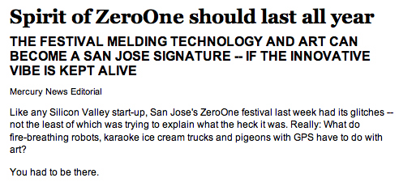

Mercury News Editorial, August 18, 2006
Spirit of ZeroOne should last all year THE FESTIVAL MELDING TECHNOLOGY AND ART CAN BECOME A SAN JOSE SIGNATURE -- IF THE INNOVATIVE VIBE IS KEPT ALIVE Mercury News Editorial Like any Silicon Valley start-up, San Jose's ZeroOne festival last week had its glitches -- not the least of which was trying to explain what the heck it was. Really: What do fire-breathing robots, karaoke ice cream trucks and pigeons with GPS have to do with art? You had to be there. But if you experienced even a taste of this first ``Global Festival of Art on the Edge,'' then you knew something special was happening. Even if you weren't entirely sure what. The weeklong convergence of art, technology and occasional weirdness was indeed edgy, fun and impressive. The main frustration was navigating complicated schedules and trying to find displays and events. But when people did find them, they seemed transfixed. The first festival coincided with the 13th International Symposium of Electronic Art hosted in San Jose. The aim now is to the make ZeroOne the city's signature event. That could be just one more pipe dream of putting San Jose on the map. But more than any other American city, San Jose has a solid link to the origins of art powered by Silicon Valley technology. It really is a natural. A biennial or even annual festival won't be enough, however. The art has to live here. It has to become part of the community's identity. People loved seeing the City Hall rotunda lit up like an ever-changing kaleidoscope during the festival, courtesy of ZeroOne artist Akira Hasegawa's ``Digital Kakejiku.'' Why not do it all the time? Or at least for special occasions. (We stole that idea from Mercury News columnist Sal Pizarro.) Maybe the haunting projection art of Jennifer Steinkamp, on display at the San Jose Museum of Art through Oct. 1, could enliven some of the stark walls on downtown streets. That big blank horror on First Street just south of the Paseo de San Antonio could be first. Maybe displays like the ones in the festival's Interactive Cafe could take up permanent residence in real coffee houses or at WiFi-enabled sidewalk cafes. Dan Fenton, head of the city's convention and visitors bureau, says a piece of digital art will become a permanent display at the convention center. That's a start. All of this dovetails with the goals of 1stACT, the group of arts and business leaders hoping to make downtown a cultural destination. It's no accident that their plan -- well, a dream so far -- calls for a new art museum attached to the convention center. That marriage of art and commerce would be good for both. There are lots of ways the ZeroOne festival can improve, and there's lots of time to work on it. The immediate challenge is to take advantage of this summer's momentum and begin weaving interesting and fun techno-art into the fabric of San Jose. |